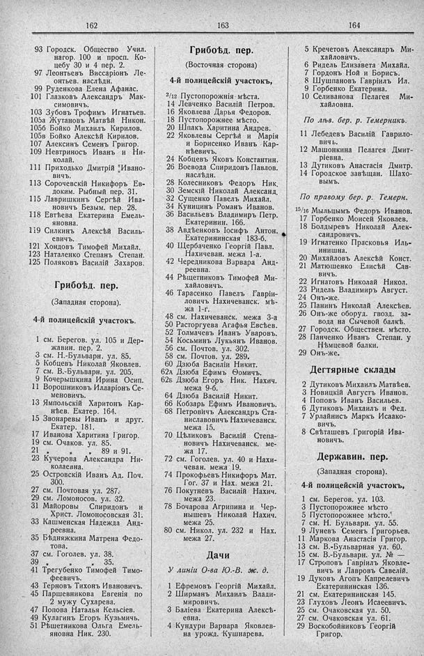

Лист источника 186
Скан

Распознанный текст
162
93 Городск. Общество Учил.
нагор. 100 и просп. Ко-
цебу 30 и 4 пер. 2.
97 Леонтьевъ Виссаріонъ Ле-
онтьев. наслѣдн.
99 Руденкова Елена Афанас.
101 Глазковъ Александръ Мак-
симовичъ.
103 Зубовъ Трофимъ Игнатьев.
105а Жутановъ Матвѣй Никон.
105б Бойко Михаилъ Кирилов.
105в Бойко Алексѣй Кирилов.
107 Алексинъ Семенъ Григор.
109 Невтриносъ Иванъ и Ни-
колай.
111 Приходько Дмитрій Ивано-
вичъ.
113 Сорочевскій Никифоръ Ев-
доким. Рыбный пер. 31.
115 Лавришкинъ Сергѣй Ива-
новичъ Безым. пер. 28.
118 Евтѣева Екатерина Емель-
яновна.
119 Силкинъ Алексѣй Василь-
евичъ.
121 Хондовъ Тимофей Михайл.
123 Наталенко Степанъ Степан.
125 Поляковъ Василій Захаров.
Грибоѣд. пер.
(Западная сторона).
4-й полицейскій участокъ.
1 см. Берегов. ул. 105 и Дер-
жавин. пер. 2.
3 см. Н.-Бульварн. ул. 85.
5 Кобцевъ Николай Яковлев.
7 см. В.-Бульварн. ул. 205.
9 Кочерышкина Ирина Осип.
11 Ворошниковъ Илларіонъ Се-
меновичъ.
13 Ямпольскій Харитонъ Кар-
нѣев. Екатер. 164.
15 Звонаревы Иванъ и друг.
Екатер. 181.
17 Иванова Харитина Григор.
19 см. Очаков. ул. 85.
21 „ „ 89 и 91.
23 Кучерова Александра Ни-
колаевна.
25 Островскій Иванъ Ад. Поч.
300.
27 см. Почтовая ул. 287.
29 см. Ломоносов. ул. 32.
31 Майоровы Спиридонъ и
Христ. Ломоносовская 31.
33 Кашменская Надежда Анд-
реевна.
35 Бѣдняжкина Матрена Федо-
това.
37 см. Гоголев. ул. 38.
39 „ „ 35.
41 Трегубенко Тимофей Тимо-
феевичъ.
43 Терновъ Тихонъ Ивановичъ.
45 Паршевникова Евгенія по
2 мужу Сухарева.
47 Попова Наталья Кельсіев.
49 Кулагинъ Егоръ Кузьмичь.
51 Рѣшетникова Ольга Емель-
яновна Ник. 230.
163
Грибоѣд. пер.
(Восточная сторона)
4-й полицейскій участокъ,
2/12 Пустопорожнія мѣста.
14 Левченко Василій Петров.
16 Яковлева Дарья Федоров.
18 Пустопорожнее мѣсто.
20 Шпакъ Харитина Андрев.
22 Яковлевы Сергѣй и Марія
и Борисенко Иванъ Кар-
нѣевичъ.
24 Кобцевъ Яковъ Константин.
26 Воевода Спиридонъ Павлов.
наслѣдн.
28 Колесниковъ Федоръ Ник.
30 Земскій Николай Александ.
32 Сущенко Павелъ Михайл.
34 Куницинъ Романъ Иванов.
36 Васильевъ Владимиръ Петр.
Екатеринин. 166.
38 Авдѣенковъ Іосифъ Антон.
Екатерининская 183-б.
40 Щербаченко Георгій Павл.
Нахичеван. межа 1-а.
42 Чередникова Варвара Анд-
реевна.
44 Рѣщетниковъ Тимофей Ми-
хайловичъ.
46 Тарасенко Павелъ Гавріи-
ловичъ Нахичеванск. мѣ-
жа 1-г.
48 см. Нахичеванск. межа 3-а
50 Расторгуева Агафья Евсѣев.
52 Толмачевъ Иванъ Уваровъ.
54 Косьминъ Лукьянъ Иванов.
56 см. Почтов. ул. 302.
58 см. Почтов. ул. 289.
60 Дзюба Василіи Никит.
62а Дзюба Ефимъ Ѳомичъ.
62б Дзюба Егоръ Ник. Нахич.
межа 9-б.
64 Дзюба Василій Никит.
66 Кобзарь Ефимъ Ивановичъ.
68 Петровичъ Александръ Ста-
ниславовичъ Нахичеванск.
межа 15.
70 Цѣликовъ Василій Степа-
новичъ Нахичеванск. ме-
жа 17.
72 см. Гоголев. ул. 40 и Нахи-
чеван. межа 19.
74 Прокофьевъ Никифоръ Мат.
Гог. 37 и Нах. межа 21.
76 Покутневъ Василій Нахич.
межа 23.
78 Бочарова Агрипина и Чер-
нышевъ Николай Нахич.
межа 25.
80 см. Никол. ул. 232 и Нах.
межа 27.
Дачи
У линіи О-ва Ю.-В. ж. д.
1 Ефремовъ Георгій Михайл.
2 Ширманъ Михаилъ Влади-
мировичъ.
3 Баліева Екатерина Алексѣ-
евна.
4 Кундури Варвара Яковлев-
на урожд. Кушнарева.
164
5 Кречетовъ Александръ Ми-
хайловичъ.
6 Ридель Елизавета Михайл.
7 Гордонъ Ной и Борисъ.
8 Шушпановъ Гавріилъ Ил.
9 Горбенко Екатерина.
10 Селиванова Пелагея Ми-
хайловна.
По лѣв. бер. р. Темерникъ.
11 Лебедевъ Василій Гаврило-
вичъ.
12 Машонкина Пелагея Дмит-
ріевна.
13 Дутиковъ Анастасія Дмитр.
14 Городское завѣщан. Шахо-
вымъ.
По правому бер. р. Темерн.
15/16 Мыльцымъ Федоръ Иванов.
17 Горбенко Моисей Яковлев.
18 Болдыревъ Николай Алек-
сандровичъ.
19 Игнатенко Прасковья Иль-
инишна.
20 Михайловъ Алексѣй Конст.
21 Матюшенко Елисѣй Сав-
вичъ.
22 Игнатовъ Николай Никол.
23 Ридель Владимиръ Август.
24 Онъ-же.
25 Панинъ Николай Алексѣев.
26 Онъ-же оборуд. гвозд. за-
вода на Сычевой балкѣ.
27 Городск. Обществен. мѣсто.
28 Панченко Иванъ Степан. у
Нѣмцевой балки.
29 Онъ-же.
Дегтярные склады
2 Дутиковъ Михаилъ Матвѣев.
3 Новицкій Августъ Иванов.
4 Поповъ Иванъ Васильев.
6 Дутиковъ Михаилъ и Фед.
7 Урлайнисъ Маркъ Исаако-
вичъ.
8 Свѣташевъ Григорій Ива-
новичъ.
Державин. пер.
(Западная сторона).
4-й полицейскій участокъ,
1 см. Берегов. ул. 103.
3 Пустопорожнее мѣсто
5 Пустопорожнее мѣсто.
7 см. Н. Бульварн. ул. 55.
9 Луневъ Семенъ Григорьев.
11 Маркова Анастасія Григор.
13 см. В.-Бульварная ул. 60.
15 см. В.-Бульварн. ул. № —
17 Строповъ Гавріилъ Яковле-
вичъ и Лавровъ Савелій.
19 Дуковъ Агопъ Капрелевичъ
Екатерининская 136.
21 см. Екатерининская 145.
23 Глуховъ Леонъ Исаеевичъ.
25 см. Очаковская ул. 50.
27 см. Очаковская ул. 61.
29 Воскобойниковъ Георгій
Григор.